MAC Flooding — Saturation de la Table CAM
Sécurité L2 · GNS3 · Kali Linux · macof (dsniff) · Port Security
Ce lab démontre une attaque MAC Flooding (ou MAC Overflow), qui exploite la capacité limitée de la table CAM (Content-Addressable Memory) d'un commutateur. En saturant cette table avec des milliers d'adresses MAC fictives, l'attaquant force le switch à basculer en mode fail-open : ne pouvant plus associer les adresses à des ports précis, il se comporte comme un simple concentrateur (hub) et diffuse tout le trafic sur l'ensemble de ses ports ouvrant la voie à de l'écoute réseau. La contre-mesure Port Security est ensuite mise en œuvre et testée dans ses trois modes de réaction.
Environnement
Outil GNS3 + Kali Linux
Switch Cisco IOU1
Attaquant Kali – 192.168.1.100/24
Victimes PC1/PC2/PC3 – .10/.20/.30
Outil d'attaque macof (suite dsniff)
Partie 1 — Réalisation de l'Attaque MAC Overflow
Topologie du réseau GNS3
Le commutateur Cisco IOU1 relie la machine attaquante Kali Linux (192.168.1.100/24) et trois postes victimes : PC1 (192.168.1.10), PC2 (192.168.1.20) et PC3 (192.168.1.30). Tous les équipements partagent le même commutateur, ce qui permettra à l'attaquant, une fois l'attaque réussie, de recevoir le trafic destiné aux autres machines.
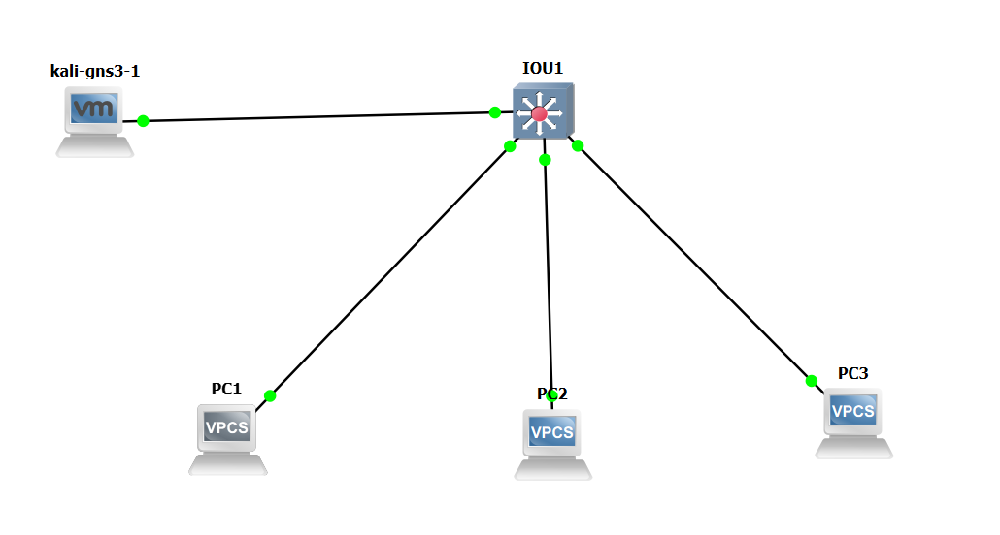
Chaque poste reçoit une adresse IP statique :
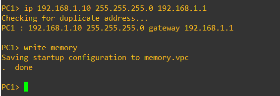
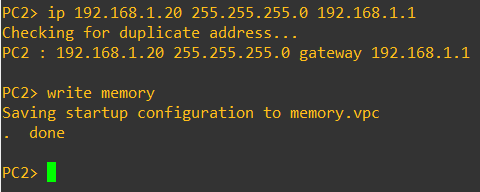
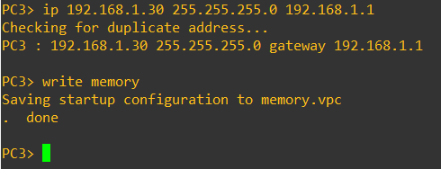
Côté attaquant, Kali Linux reçoit dynamiquement l'adresse 192.168.1.100/24 sur son interface eth0.
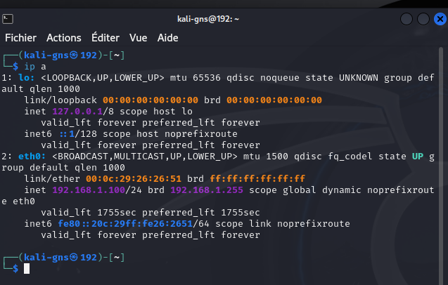
État de la table MAC avant l'attaque
Avant de lancer l'attaque, la commande show mac address-table confirme que la table CAM du commutateur ne contient que quatre entrées légitimes, chacune associant une adresse MAC réelle à un port précis (PC1, PC2, PC3 et Kali).
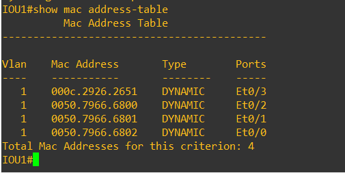
Découverte de l'outil macof
Sur Kali Linux, l'aide de l'outil macof (suite dsniff) est consultée avant l'attaque. Cet outil génère des milliers de trames Ethernet par seconde avec des adresses MAC source aléatoires et falsifiées ; l'option -i eth0 spécifie l'interface d'émission.
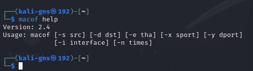
Lancement de l'attaque
La commande macof -i eth0 inonde immédiatement le réseau : chaque trame Ethernet envoyée porte une adresse MAC source différente, générée aléatoirement. Le commutateur apprend et stocke chacune de ces adresses fictives dans sa table CAM, la remplissant progressivement jusqu'à saturation.
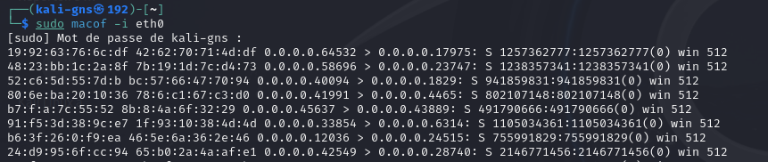
Table MAC saturée après l'attaque
Après avoir arrêté l'attaque, show mac address-table count révèle 7552 adresses MAC enregistrées, toutes associées au port du commutateur relié à Kali — alors que la table ne devrait contenir qu'une poignée d'entrées légitimes. Le commutateur, débordé, ne peut plus distinguer les adresses réelles et commence à diffuser toutes les trames sur l'ensemble de ses ports (comportement de concentrateur), exposant l'intégralité du trafic réseau à l'attaquant.
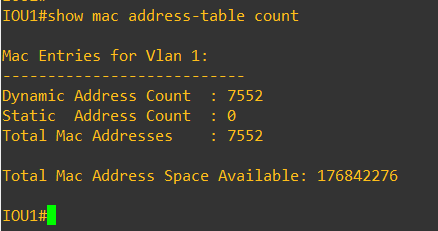
Partie 2 — Implémentation de la Solution : Port Security
La contre-mesure consiste à activer Port Security sur le port du commutateur connecté à Kali (Et0/3), afin de limiter le nombre d'adresses MAC autorisées et de définir une réaction en cas de dépassement.
Étape 1 — Mode accès et activation de Port Security
Le port Et0/3 est d'abord placé en mode accès (switchport mode access) — prérequis indispensable, Port Security ne pouvant s'activer que sur un port d'accès et non en mode trunk. La commande switchport port-security active ensuite la fonctionnalité : le commutateur commence à surveiller les adresses MAC source reçues sur ce port.
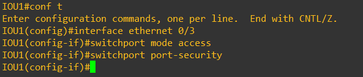
Étape 2 — Apprentissage dynamique (sticky)
La commande switchport port-security mac-address sticky configure l'apprentissage dynamique : le commutateur apprend automatiquement les premières adresses MAC vues sur le port et les fige dans sa configuration, de façon persistante après redémarrage.
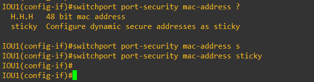
Étape 3 — Limitation à 2 adresses MAC
switchport port-security maximum 2 fixe la limite d'adresses MAC autorisées sur Et0/3 à deux. Toute adresse supplémentaire déclenchera une violation de sécurité — une valeur choisie pour couvrir les besoins légitimes tout en bloquant une attaque de type MAC flooding.
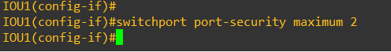
Étape 4 — Mode de violation : Protect
switchport port-security violation protect configure le mode le moins restrictif : les trames provenant d'une adresse MAC non autorisée sont simplement ignorées, sans alerte ni entrée de journal. Le port reste actif et le compteur de violations n'est pas incrémenté.
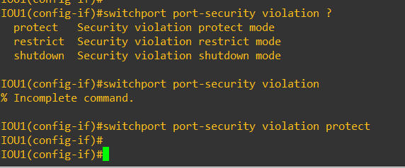
La vérification via show port-security interface ethernet 0/3 confirme la configuration : statut Enabled, mode Protect, maximum 2 adresses.
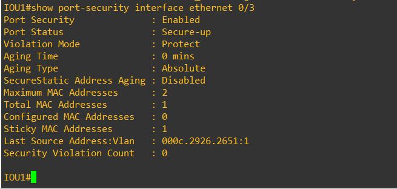
Étape 5 — Test du mode Protect
L'attaque macof est relancée puis arrêtée. La vérification montre que le nombre total d'adresses MAC apprises reste bloqué à 2 (la limite configurée) : les adresses supplémentaires envoyées par l'attaquant ont bien été ignorées, et les communications légitimes n'ont pas été interrompues.
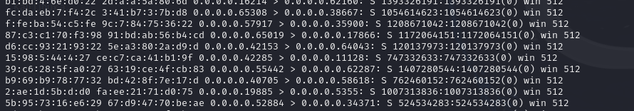
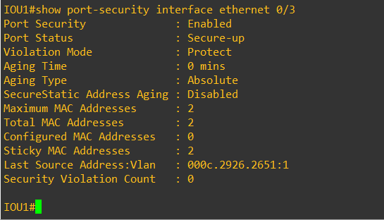
Point important : en mode Protect, le compteur de violations reste à 0 même si des adresses non autorisées tentent d'accéder au port. Les trames non conformes sont abandonnées silencieusement, sans traçabilité — pratique, mais cela ne permet pas à l'administrateur de savoir qu'une attaque a eu lieu.
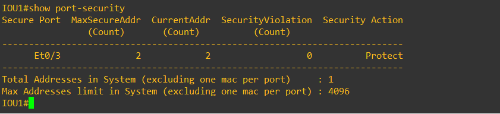
Étape 6 — Mode de violation : Restrict
Le mode est changé en switchport port-security violation restrict. Comme Protect, les trames non autorisées sont rejetées et le port reste actif, mais cette fois le compteur de violations est incrémenté et un message Syslog est généré à chaque violation — offrant une traçabilité des tentatives d'intrusion.
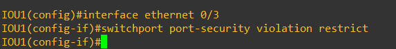
Après une nouvelle relance de macof, le compteur affiche 1307 violations : autant de trames provenant d'adresses MAC non autorisées ont été détectées et rejetées, cette fois avec traçabilité complète.
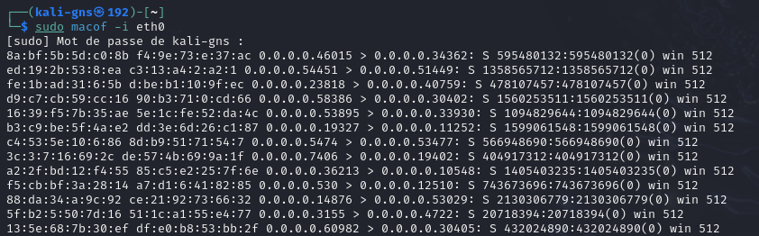
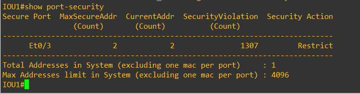
Étape 7 — Mode de violation : Shutdown
Le mode le plus sévère est enfin testé : switchport port-security violation shutdown. Dès qu'une violation est détectée, le port est automatiquement désactivé et passe en état err-disabled, nécessitant une réactivation manuelle par l'administrateur.
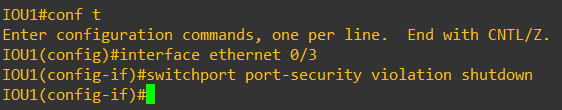
La relance de macof déclenche presque immédiatement la coupure du port : l'attaque est stoppée net, la machine Kali se retrouvant coupée du réseau par le port qu'elle utilisait elle-même pour attaquer.
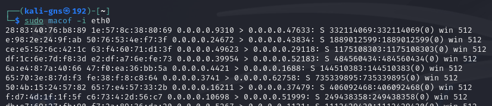
Le compteur de violations affiche 1308 (cumul des violations précédentes plus la nouvelle attaque), confirmant que le mode Shutdown a bien réagi dès la première trame illégitime.
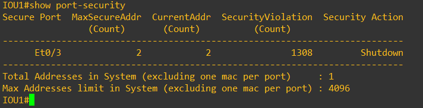
show port-security interface ethernet 0/3 confirme que le statut du port est passé à Secure-shutdown.
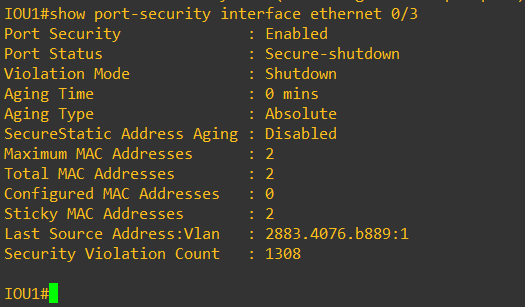
show interfaces status confirme le blocage total : Et0/3 affiche l'état err-disabled, bloquant complètement le trafic jusqu'à intervention manuelle — le mécanisme de protection le plus fort de Port Security.
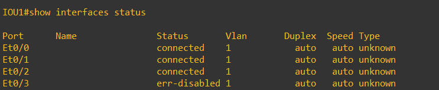
Étape 8 — Réactivation manuelle du port
Pour remettre le port en service, l'administrateur doit exécuter successivement shutdown puis no shutdown sur l'interface. Cette procédure manuelle est volontairement contraignante : elle force un contrôle humain avant de restaurer le service, garantissant que la cause de la violation a bien été analysée.
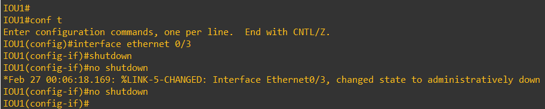
| Mode de violation | Port reste actif ? | Trafic non autorisé | Compteur / Log | Récupération |
|---|---|---|---|---|
| Protect | Oui | Rejeté silencieusement | Non — reste à 0 | Automatique, rien à faire |
| Restrict | Oui | Rejeté | Oui — 1307 violations tracées | Automatique, rien à faire |
| Shutdown | Non — passe en err-disabled | Bloqué, port coupé entièrement | Oui — 1308, syslog immédiat | Manuelle (shutdown / no shutdown) |
Bilan : ce lab démontre concrètement le mécanisme et les conséquences d'une attaque MAC Overflow — la saturation de la table CAM force le commutateur à se comporter comme un concentrateur, exposant tout le trafic réseau. Port Security s'avère une contre-mesure efficace, mais le choix du mode de violation dépend des exigences de disponibilité et de sécurité du réseau : Protect est transparent mais silencieux, Shutdown offre la protection maximale au prix d'une intervention manuelle, et Restrict représente souvent le meilleur compromis entre traçabilité et continuité de service.